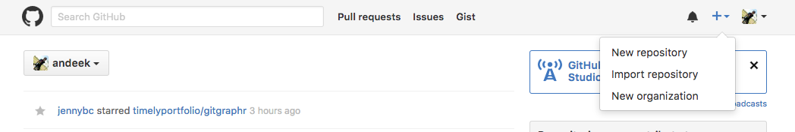
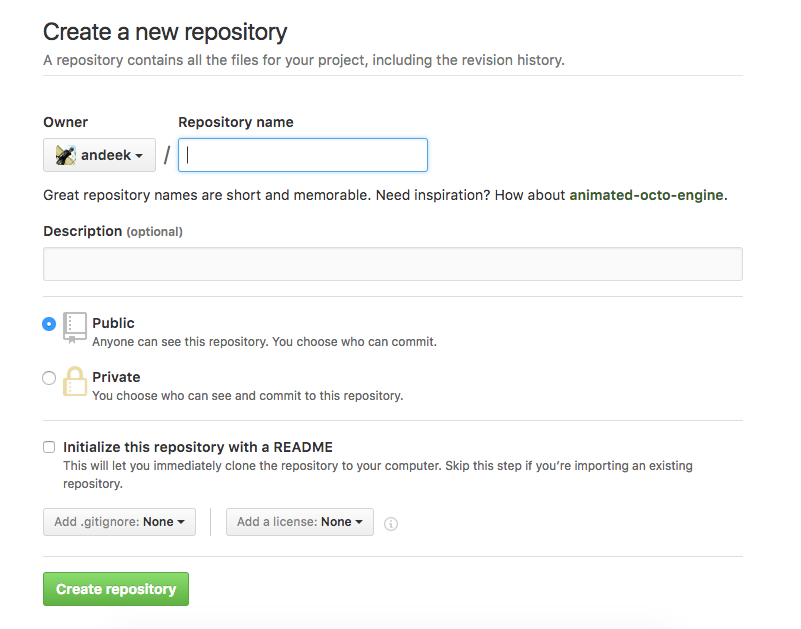
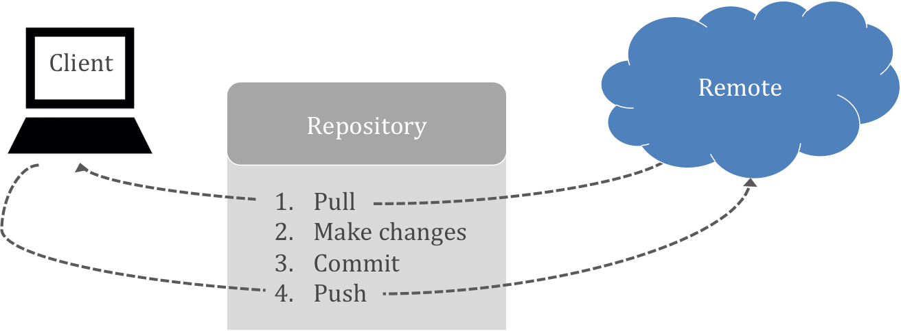

Definition/background
- Git is a version control system that was created to help developers manage collaborative software projects. Git tracks the evolution of a set of files, called a repository or repo.
- This helps us
- merge conflicts that arrise from collaboration
- rollback to previous versions of files as necessary
- store master versions of files, no more
paper_final_final_I_really_mean_it.docx
Terminology
- Repository: The most basic element of git, imagine as a project’s folder. A repository contains all of the project files, and stores each file’s revision history. Can be either public or private.
- Clone: A copy of a repository that lives on your computer instead of on a website’s server somewhere, or the act of making that copy.
- Pull: When you are fetching in changes and merging them.
- Commit: An individual change to a file (or set of files). Every time you save it creates a unique ID that allows you to keep record of what changes were made when and by who.
- Push: Sending your committed changes to a remote repository such as GitHub.com.
Terminology (Cont’d)
- Fork: A fork is a personal copy of another user’s repository that lives on your account. Forks allow you to freely make changes to a project without affecting the original.
- Pull Request: Proposed changes to a repository submitted by a user and accepted or rejected by a repository’s collaborators.
- Issue: Issues are suggested improvements, tasks or questions related to the repository.
- Remote: This is the version of something that is hosted on a server, most likely GitHub.com. It can be connected to local clones so that changes can be synced.
From https://help.github.com/articles/github-glossary/
GitHub
There are many hosting services for remote repositories (GitHub, Bitbucket, GitLab, etc.). We will use GitHub in this class, but the ideas carry over to the other services.
By default, all materials on GitHub are public. This is good because you are getting your work out there and contributing to the open source community!
If you need private repos, checkout GitHub for Education - free private repos for students/postdocs/professors.

Creating Repos
- 
- 
Initialize readme (yes), .gitignore (R usually), license (e.g. GPL 3)
Your Turn

-
Create a GitHub account
-
github.com
-
Consider your username, want to be identifiable, professional and probably include your actual name. Do you have other handles? Twitter?
-
Don’t worry about paying for a plan now, stick with the free one.
-
Create a
hello-world repo
-
E-mail me your GitHub username so that I can add you to our class organization (ajkaplan@iastate.edu)
Creating Repos (Cont’d)
From scratch
-
Create the repo on the GitHub website
-
Clone the repo
-
Start working
-
Add files, commit, push, etc.
From existing folder
-
Create the repo on the GitHub website
-
Clone the repo
-
Copy existing work into local folder
-
Add files, commit, push, etc.
Pushing and pulling, a tug of war

Important: remember to pull before you start working to get the most up to date changes from your collaborators (or your past self) before making local changes!
When should I commit?
Think of commits as a checkpoint in a video game. This is a point in time when you want to save your status so that you can come back to it later if need be.
Commits are like voting. I like to do it early and often.
- Me, right now
Blow it up
Sometimes your local repo gets borked. That’s OK. There are ways that we can work really hard and fix them, but sometimes you just want to stash your files somewhere and re-clone from your centralized repository.
Installation help
We are not covering installation on your personal computers for this class. If you would like to work through it on your own, here is an excellent guide: http://happygitwithr.com/installation-pain.html
Feel free to come to office hours or setup individual time with us if you need help.
Your Turn
-
Edit the README file in your
hello-world repo
-
Commit and push changes
-
Check out your commit history!
Acheiving that PR
No, not personal record… pull request!